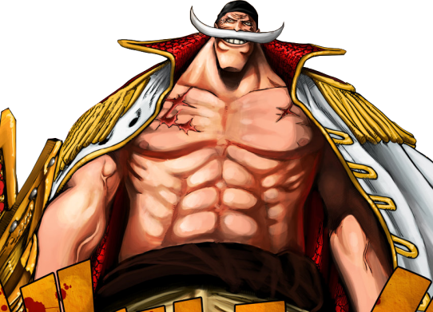
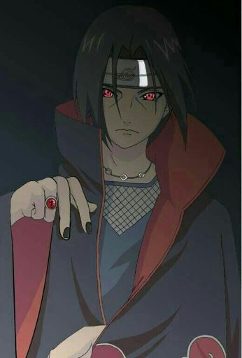
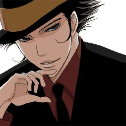

O objetivo dessa págin é listar alguns personagens marcantes de animes por suas personalidades que de alguma forma se tornaram personagens memoráveis.
Edward Newgate : Barba Branca
Em One Piece temos diversos personagens marcantes, mas o escolhido foi o Imperador Barba Branca.
Apesar de aparecer em poucos episódios ele conseguiu ser um personagem extremamente marcante por sua postura imponente e seu grande propósito de vida.
Itachi Uchiha
Em Naruto, mesmo com personagens muito fortes como Madara, Uchiha Itachi ainda consegue se destacar por sua história.
Pela personalidade e por sua história Itachi se tornou um dos personagens mais amados de todos os animes.
Reborn
Em Katekyo Hitman Reborn, o personagem Reborn é muito carismático e com boas lições